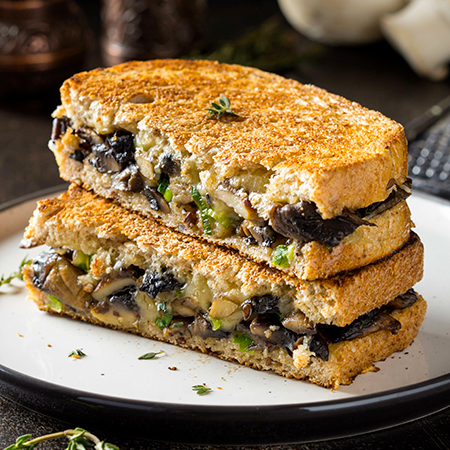

Croque-Cake à partager aux Champignons

Vous ne savez pas quoi faire à manger ce soir ? Vos enfants sont difficile à satisfaire ?
Les Croque-Cake aux Champignons sont fait pour vous !
préparation :20 min
cuisson :30 min
Pour partager 4 personnes vous aurez besoins de :
- 6 tranches de pain de mie sans croûte
- 500g de champignons mélangés (girolles, pleurotes, champignons de Paris ...)
- 150g de pousses d'épinards
- 200g de cheddar rapé
- 40g de beurre
- 30cl de lait
- 30g de farine
- 2 pincées de noix de muscade
- sel et poivre
Voici ensuite les quelques étapes de préparation :
- Nettoyez les champignons et découpez-les en tranches. Chauffez 20g dde beurre dans une grande sauteuse. Faites-y revenir les champignons sur le feu vif jusqu'au moment où ils commencent à dorer. Ajoutez les épinards, du sel et du poivre. Laissez sur le feu jusqu'à ce que les épinards flétrissent. Réservez ces légumes
- Placez le reste du beurre dans la sauteuse. Ajoutez la farine et mélangez bien. Versez le lait en fouettant. Faites légèrement épaissir cette béchamel. Ajoutez 60g de cheddar rapé et la noix de muscade.
- Préchauffez le four à 180°C. Tapissez le fond d'un moule à cake d'environ 24 cm avec 2 tranches de pain. Couvrez-les d'un peu de béchamel. Répartissez-y un tiers des champignons aux épinards et parsemez généreusement de cheddar. Recommencez toute l'opération une deuxième fois. Terminez par une couche de pain de mie généreusement recouverte de béchamel.
- Enfournez pour 15 min. Passez sous le gril brûlant pour faire dorer le croque-cake.
Et Voilà, Découpez-le en tranches et dégustez-le accompagné de feuille de salade !
Vos Croque-Cake sont prêt à être partager bien chaud !!!